Arved, pangandus, pearaamat, käibemaks ja Eesti palgaarvestus ühes büroo töölauas.
Näidisettevõtted: Põhjatäht Teenused OÜ, Northstar Studio Ltd ja Demo OÜ (sample payroll)
v0.4.0 · 9. oktoober 2026 · Kohalik näidisväljaanne
| Peatükk | Lehed / slaidid | Mida teete |
|---|---|---|
| 01 · Alustamine | 3–11 | Logite sisse Google’i või e-postiga, loote konto, lähtestate parooli, vahetate klientide raamatupidamist |
| 02 · Müük, ost ja automatiseerimine | 12–18 | Müügiarved, ostuarved, kontaktid, korduvad arved ja meeldetuletused |
| 03 · Pangandus, raamatupidamine ja maksud | 19–22 | Pangatehingute sidumine, aruanded, KMD töölehed |
| 04 · Palgaarvestus raamatupidamisbüroole | 23–32 | Osakoormus, tunnitasu, juhatuse liikme tasu, sotsiaalmaksu miinimumkohustus, palgaarvestused, palgalehed |
| 05 · Liidestused ja töötajate import | 33–40 | FastHR-i ühendamine või CSV-import ja töötajate ülevaatus enne palgaandmete muutmist |
| 06 · Viited | 41–43 | 2026. aasta määrad, erandid ja piirangud |
Ekraanipildid on tehtud kohalikus keskkonnas sünteetiliste näidisandmetega. Nimed, isikukoodid, IBAN-id ja e-posti aadressid on testandmed, mitte päris inimesed ega ettevõtted. FastHR-i import kasutab FastHR-i API simulatsiooni.
Üks töölaud kõigile klientidele: vahetage klienti külgmenüüst, hoidke iga kliendi pearaamat eraldi ning töötage eesti või inglise keeles.
fastaccounts.org tutvustab toodet Eesti ja Ühendkuningriigi ettevõtetele.
Jaluses olev versiooni link avab lehe /healthz, mis
näitab töötavat versiooni ja andmebaasi olekut.
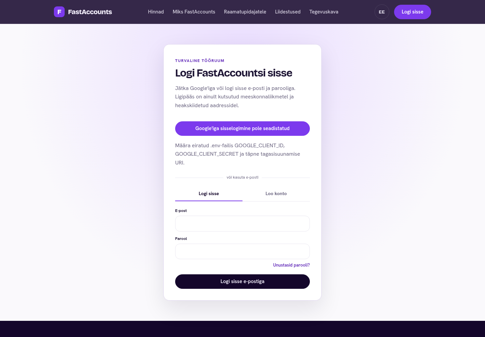
Selles kohalikus näidiskeskkonnas pole Google’i sisselogimist seadistatud ja nupp ütleb seda; tootmiskeskkonnas on mõlemad võimalused olemas.
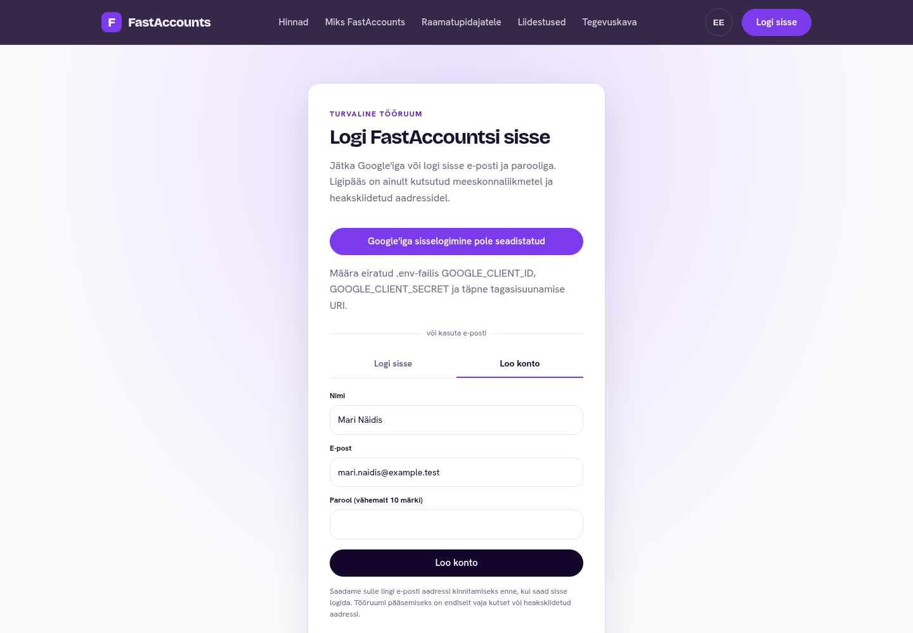
Ligipääsuks on endiselt vaja kutset või lubatud aadressi. Teade pärast registreerimist on sama sõltumata sellest, kas aadressi saab registreerida.
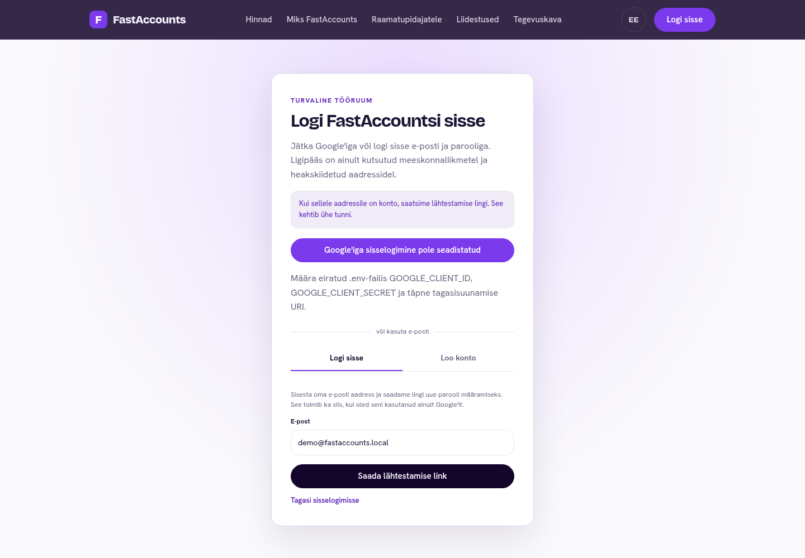
Nii saab ka Google’i kasutaja endale parooli lisada. Korduvad katsed peatatakse kontode kaitseks mõneks ajaks.
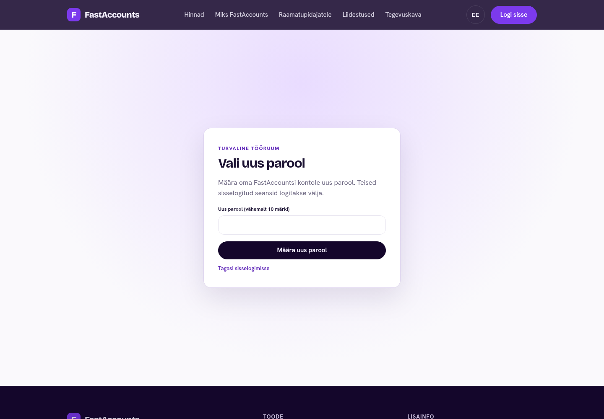
Parooli muutmine logib konto välja kõigist teistest brauseritest.
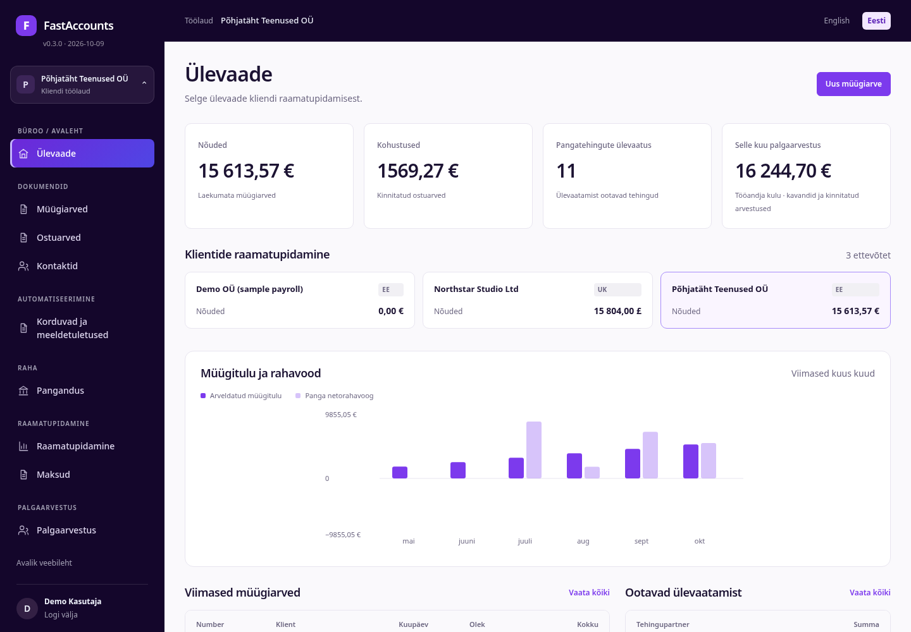
Ülevaade koondab valitud kliendi raamatupidamise:
Klientide raamatupidamine loetleb kõik teile kättesaadavad ettevõtted ja nende nõuded. Graafik võrdleb viimase kuue kuu arveldatud tulu ja panga netoliikumist. Uus müügiarve alustab kohe uut arvet.
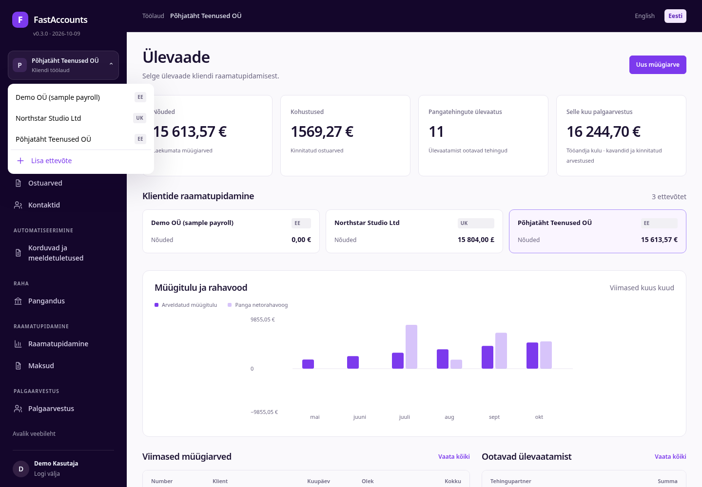
Iga klient on eraldi ettevõte oma kontoplaani, dokumentide, pangakontode, palgaarvestuse ja liidestustega.
Palgaarvestus on saadaval ainult eurodes peetava raamatupidamisega Eesti ettevõtetele; teiste klientide puhul on menüüpunkt Palgaarvestus hall ja selgitusega.
v0.4.0 · 2026-10-09)
näitab kasutatavat versiooni; klõps avab seisukontrolli.Kitsal ekraanil peitub külgmenüü nupu ☰ taha.
Koostage müügiarveid, vaadake üle ostuarved ning laske korduvatel arvetel ja meeldetuletustel rutiinne töö ära teha.
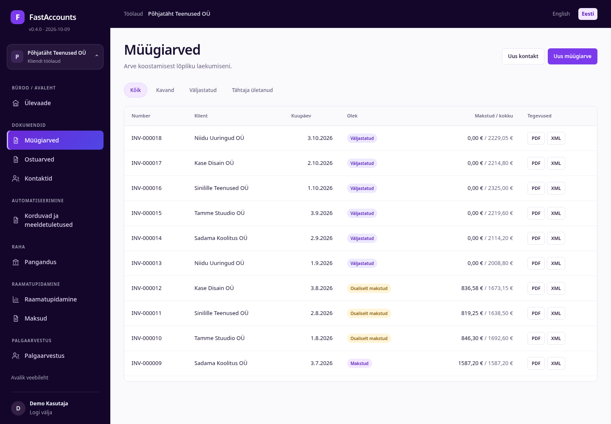
Müügiarved näitab iga arvet koos olekuga: Kavand, Väljastatud, Osaliselt makstud, Makstud või Tähtaja ületanud. Filtreerige nimekirja kohal olevate sakkidega.
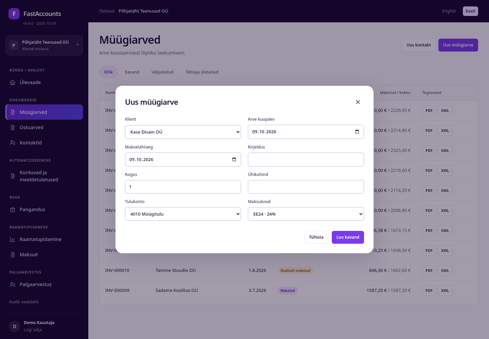
Käibemaks arvutatakse iga rea kohta täpsete kümnendarvudega ja kirjendatakse arve väljastamisel kliendi käibemaksukontodele.
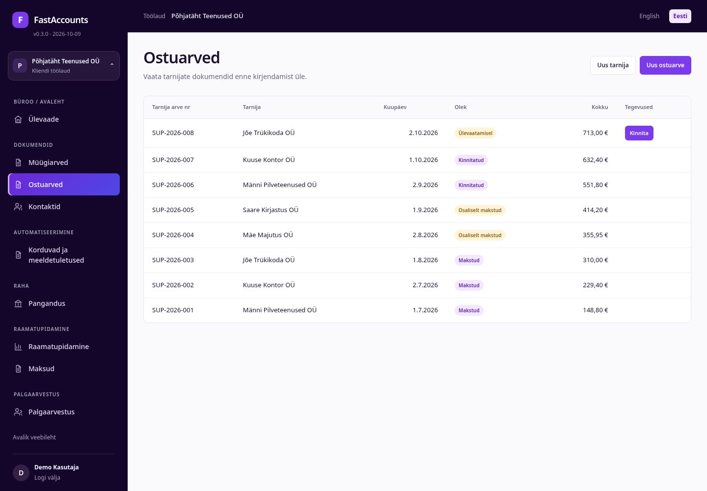
Ostuarved hoiab tarnijate dokumente enne pearaamatusse jõudmist.
Kasutage ülevaatust kõige jaoks, mida raamatupidaja peab enne kontrollima, näiteks pöördmaksustamine või mahaarvamisele mittekuuluv käibemaks.
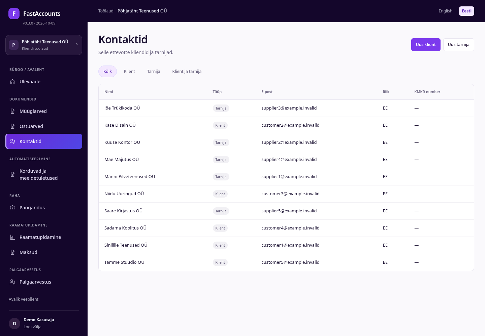
Kontaktid hoiab iga kliendi ostjaid ja tarnijaid koos liigi, e-posti, riigi ja KMKR-numbriga. Filtreerige liigi järgi: ostja, tarnija või mõlemad.
Kontakte kasutavad müügi- ja ostuarved, pangatehingute sidumine ja korduvad arved, seega hoidke e-posti aadressid ajakohased: meeldetuletused saadetakse sinna.
Korduvad ja meeldetuletused näitab korduvate arvete graafikuid ja meeldetuletuste astmeid.
E-kirjade saatmiseks on vaja seadistusi
POSTMARK_API_TOKEN ja FROM_EMAIL; seni teatab
leht sellest ja midagi ei saadeta.
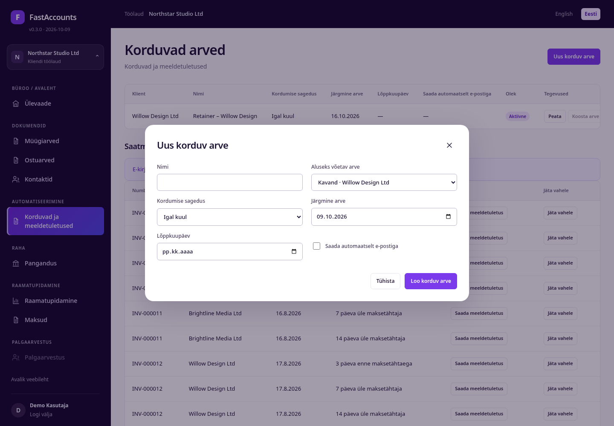
Iga koostamine loob mallist tavalise arve, nii et numeratsioon, käibemaks ja kirjendamine järgivad samu reegleid nagu käsitsi koostatud arvetel.
Siduge pangaread dokumentidega, lugege pearaamatut ja koostage käibemaksu töölehed raamatupidaja ülevaatuseks.
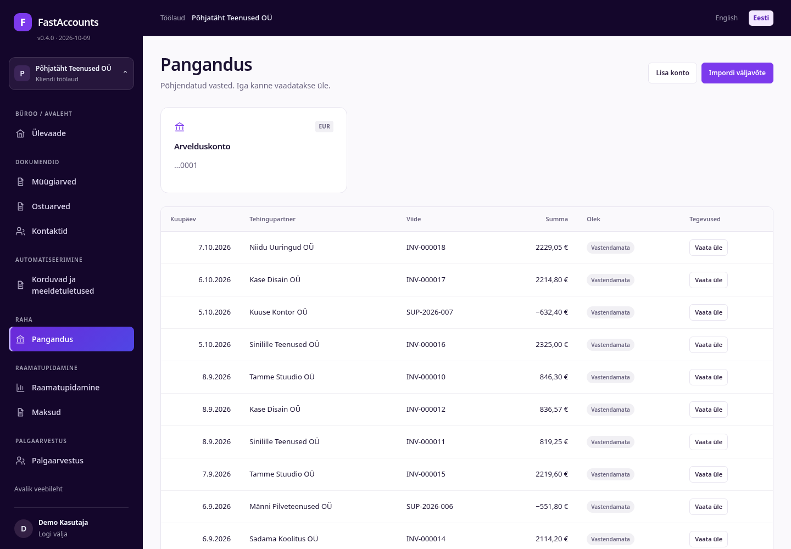
Pangandus näitab iga pangakontot ja selle imporditud tehinguid.
Lisa konto registreerib kliendile uue pangakonto. Kinnitatud vaste kirjendab makse ja uuendab arvete olekuid.
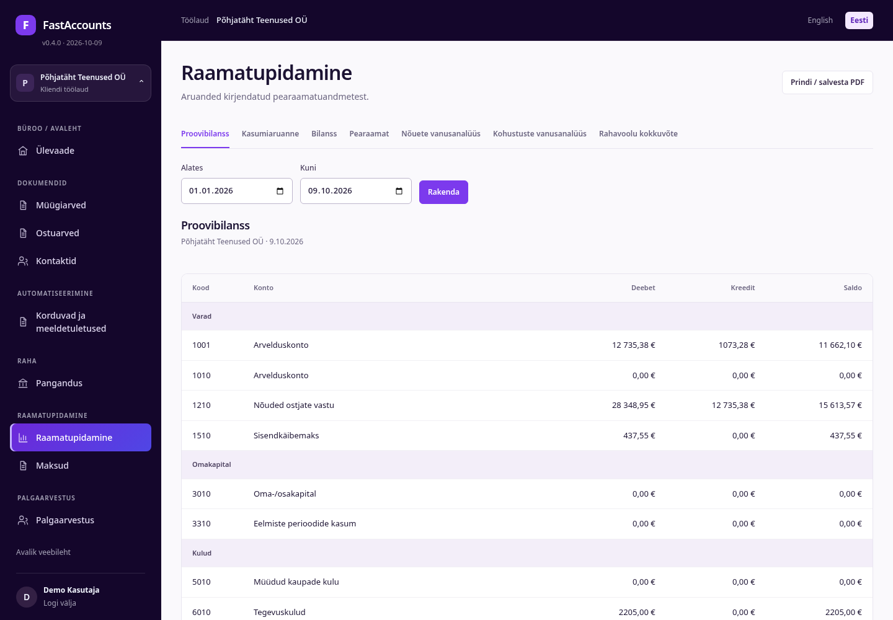
Raamatupidamine koostab aruanded muutumatust ja tasakaalus pearaamatust:
Valige Alates ja Kuni, klõpsake Rakenda ning kasutage kliendi toimiku jaoks nuppu Prindi / salvesta PDF. Kandeid ei muudeta; parandused tehakse uute kannetena.
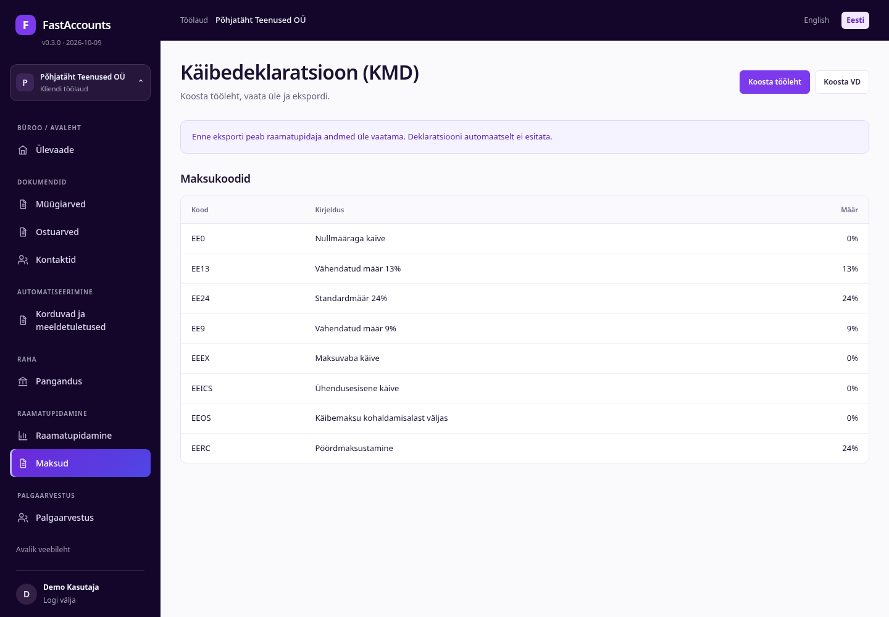
Maksud koostab Eesti KMD (Ühendkuningriigi ettevõtetele VAT-deklaratsiooni).
Koosta VD koostab ühendusesisese käibe aruande. Eksport nõuab raamatupidaja ülevaatust; FastAccounts ei esita deklaratsioone otse EMTA-le ega HMRC-le.
Eesti 2026. aasta palgaarvestus iga kliendi kohta: kuupalk, osakoormus, tunnitasu ja juhatuse liikme tasu, sotsiaalmaksu miinimumkohustus, palgalehed ja automaatsed kanded.
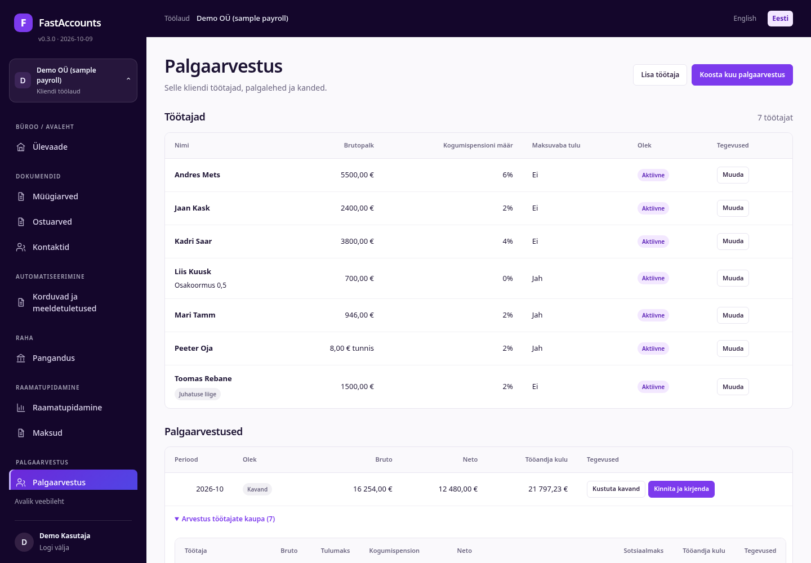
Avage eurodes peetava raamatupidamisega Eesti kliendi (siin Demo OÜ (sample payroll)) Palgaarvestus.
Paremal üleval on Lisa töötaja ja Koosta kuu palgaarvestus.
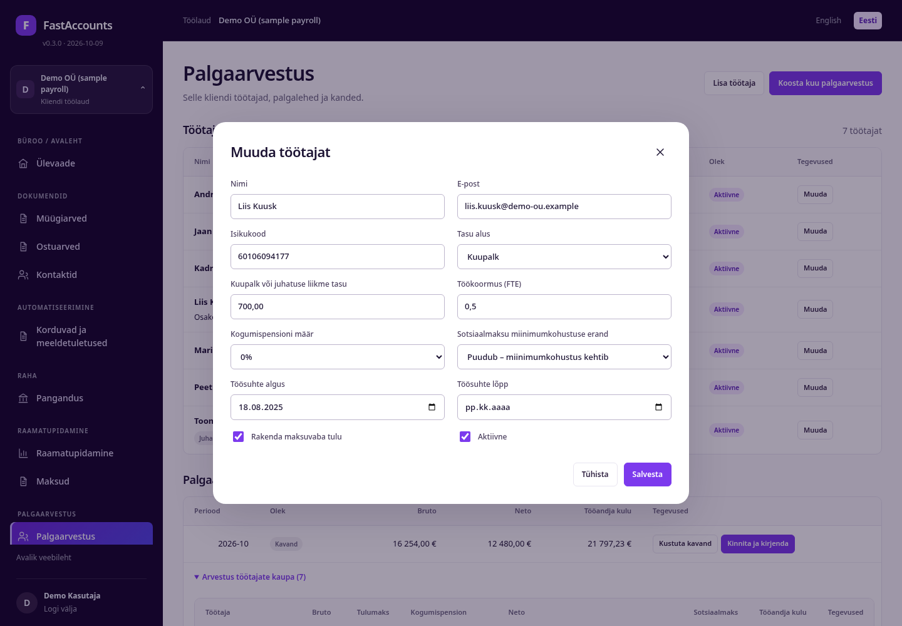
Alampalga kontroll arvestab koormust: 946 € × 0,5 = 473 € alates 1. aprillist 2026 (enne seda 886 €). Märkige Töösuhte algus ja Töösuhte lõpp, et palgaarvestus jätaks välja väljaspool töösuhet olevad kuud.
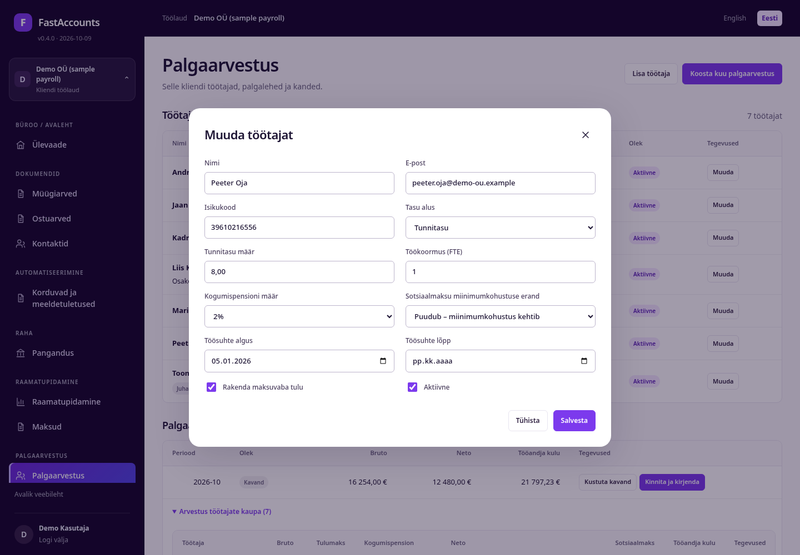
Kolmas tasu alus on Juhatuse liikme tasu: töötuskindlustusmakset ja sotsiaalmaksu miinimumkohustust ei rakendu. Sotsiaalmaksu miinimumkohustuse erand näitab, miks miinimumkohustus inimesele ei kehti (vt viiteid).
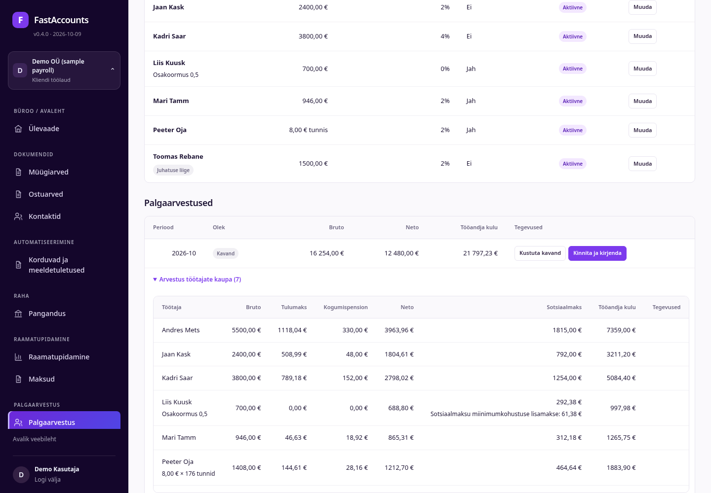
Oktoobri 2026 kavand näitab kliendi bruto-, neto- ja tööandja kulu (bruto 16 254,00 €, tööandja kulu 21 797,23 €). Arvestus töötajate kaupa:
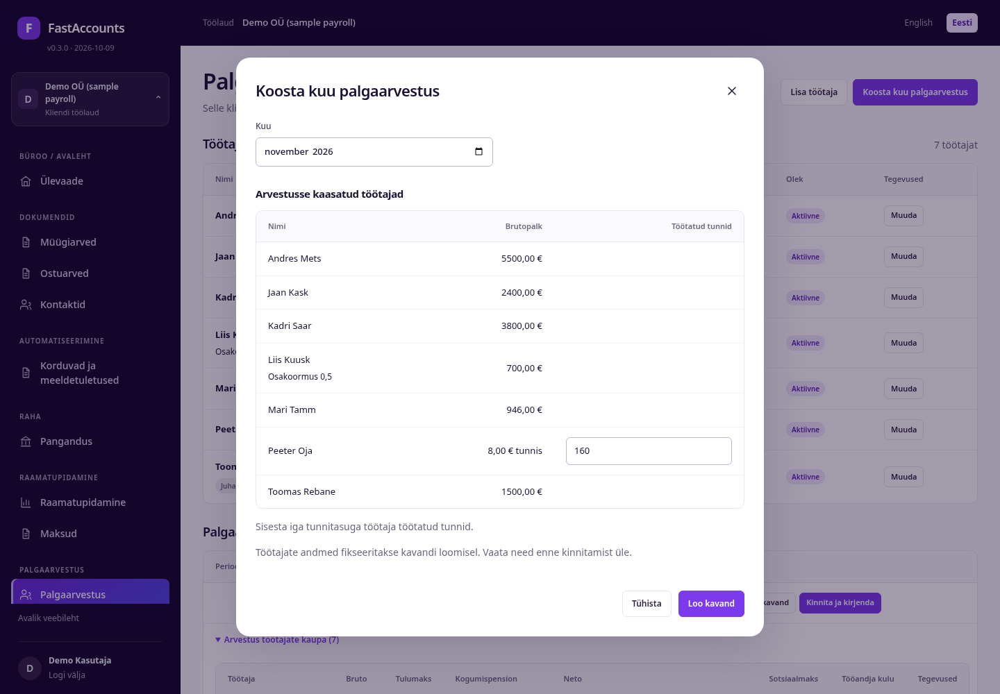
Töötaja andmed külmutatakse kavandisse, nii et hilisemad muudatused seda ei muuda. Alampalga kontrolli tõrge nimetab töötaja ja summa.
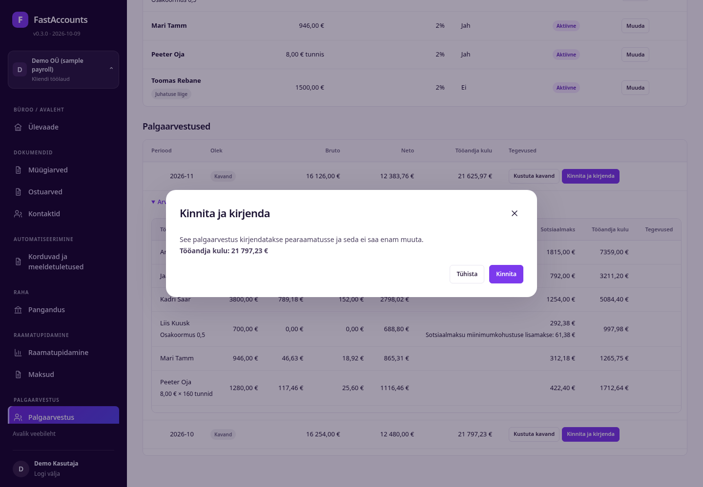
Kinnita ja kirjenda näitab tööandja kulu ja küsib kinnitust. Kinnitamisel:
Vale kavandi saab kustutada nupuga Kustuta kavand ja uuesti koostada.
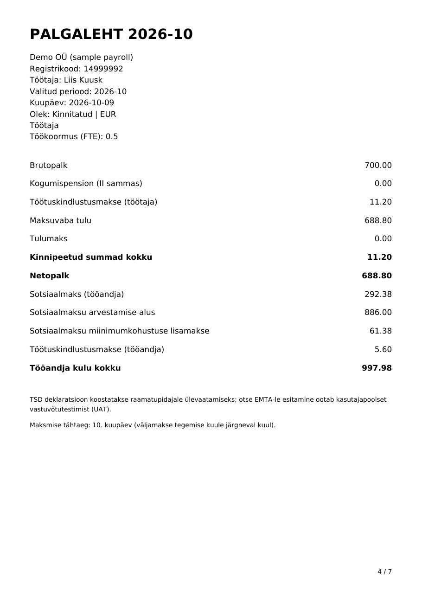
Palgalehed PDF koostab iga töötaja kohta ühe lehe:
TSD esitamine EMTA-le ei ole automatiseeritud; selle esitab raamatupidaja.
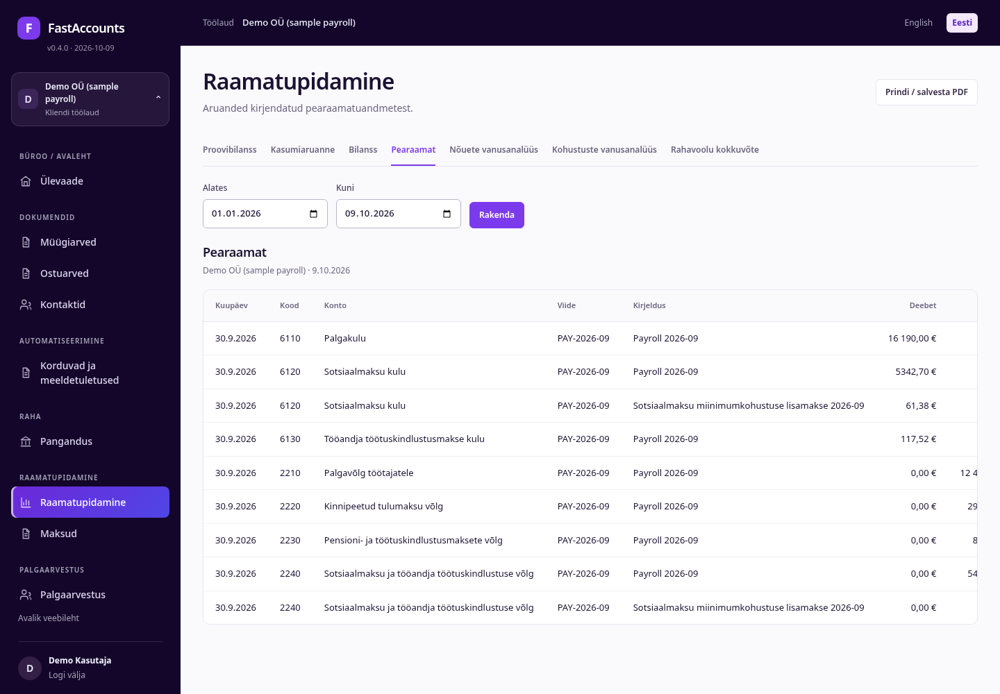
Iga kinnitatud arvestus kirjendatakse kliendi palgakontodele, näiteks:
Miinimumkohustuse lisamakse on eraldi rida oma kirjeldusega, nii et seda on kliendile lihtne selgitada. Kanded on dateeritud perioodi lõpuga.
| Reegel | 2026 |
|---|---|
| Kuu minimaalne arvestusalus | 886 € → minimaalne sotsiaalmaks 292,38 € töötaja kohta |
| Kes maksab puudujäägi | Tööandja, täiendava tööandja kuluna |
| Kuu keskel algav või lõppev töösuhe | Alus arvestatakse töösuhte kalendripäevade järgi |
| Juhatuse liikme tasu | Miinimumkohustus ei kehti |
| Töötaja juures märgitav erand | Pensionär, osaline või puuduv töövõime, lapse kasvatamine, õpilane, varem töötu, lühendatud tööaeg, volikogu liige, laevapere liige, välisteenistuja abikaasa, pikaajaline haigusleht, terve kuu eemal, maksuvaba tulu arvestab teine tööandja |
Allikad: sotsiaalmaksuseadus § 2 lg 2–4; rahandusministri määrus nr 17; EMTA „Sotsiaalmaks“. Valige töötaja juures sobiv sotsiaalmaksu miinimumkohustuse erand; see trükitakse palgalehele.
Ühendage iga kliendi personalitarkvara üks kord ja vaadake iga imporditud töötaja üle enne, kui palgaandmed muutuvad.
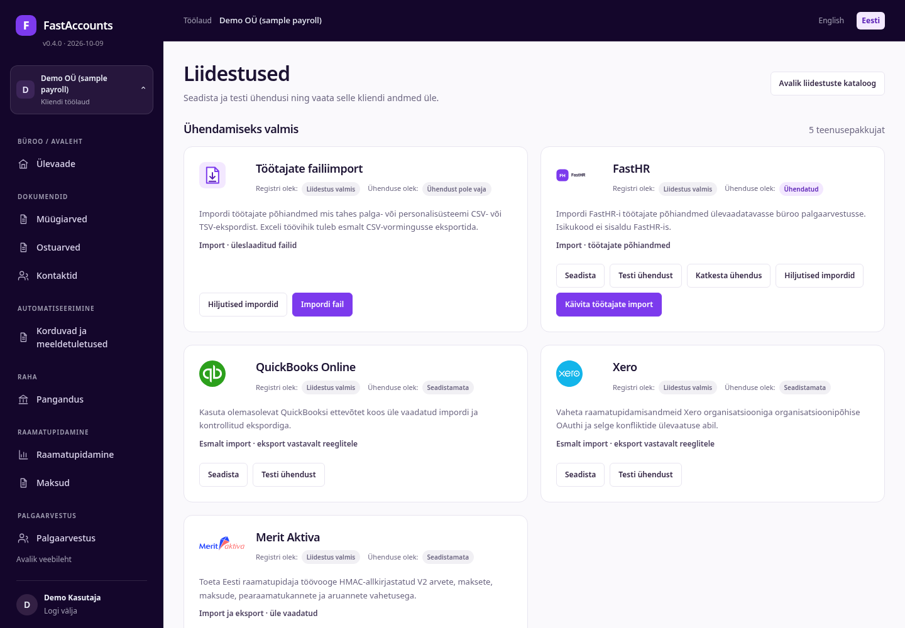
Liidestused (menüüs Seaded) näitab esmalt kasutusvalmis liidestusi:
Töötajate failiimport ei vaja ühendust; FastHR, QuickBooks Online, Xero ja Merit Aktiva on ühendamiseks valmis. Kavandatud liidestused on all; Avalik liidestuste kataloog avab täieliku nimekirja avalikul veebilehel.
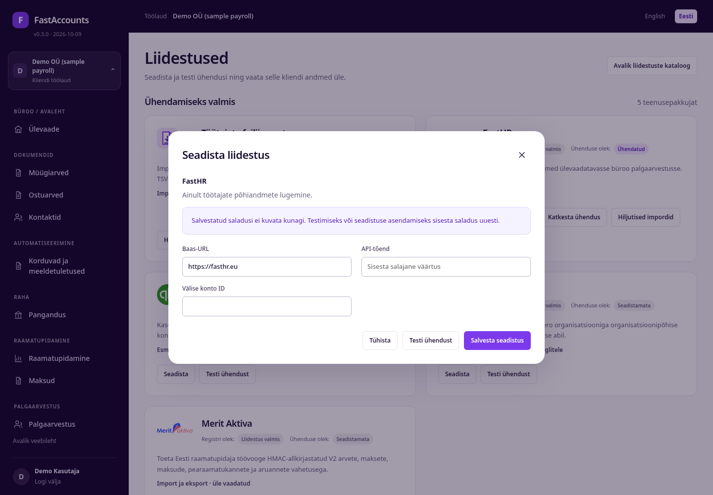
Saladused krüpteeritakse kliendi kaupa ja neid ei näidata enam kunagi; tõendi vahetamiseks sisestage uus. Katkesta ühendus eemaldab ühenduse; FastHR-i ainult loetakse, sinna ei kirjutata midagi tagasi.
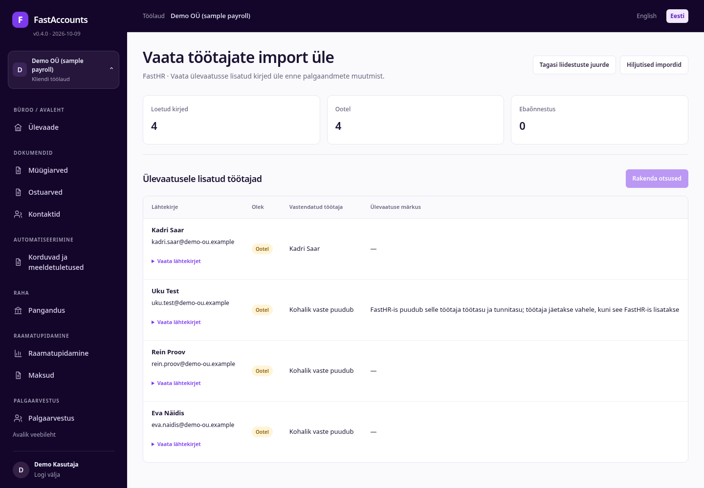
Käivita töötajate import lisab FastHR-i töötajad ülevaatusele; midagi ei muutu veel.
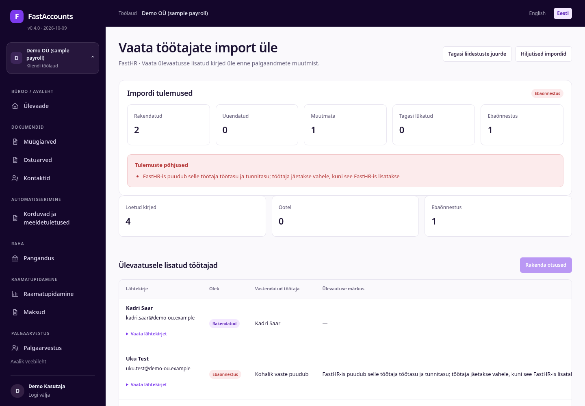
Impordi tulemused loendab rakendatud, uuendatud, muutmata, tagasi lükatud ja ebaõnnestunud kirjed ning näitab põhjuseid. Töötasuta kirje jäetakse vahele, mitte ei arvata; parandage see FastHR-is ja valige Proovi rakendamist uuesti. Hiljutised impordid säilitab ajaloo.
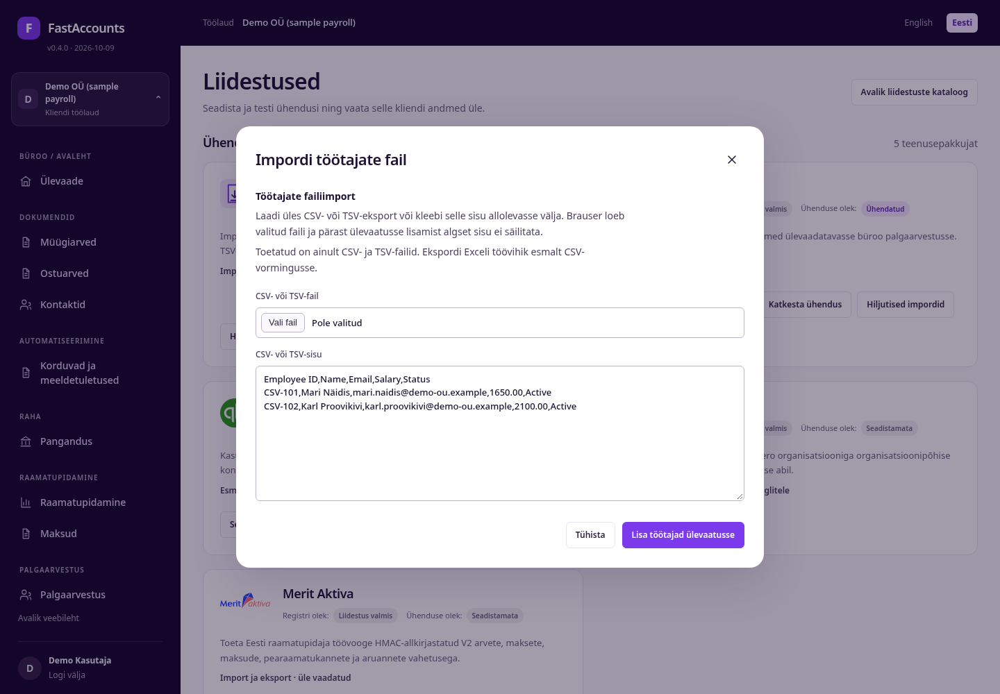
Kui kliendi palga- või personalisüsteemil liidestust pole, kasutage faili eksporti.
Tuntud veerupealkirjad on näiteks Töötaja ID, Nimi, E-post, Palk (kuupalk), Isikukood ja Staatus, samuti ingliskeelsed vasted. Exceli töövihik eksportige enne CSV-vormingusse. Algfaili ei salvestata.
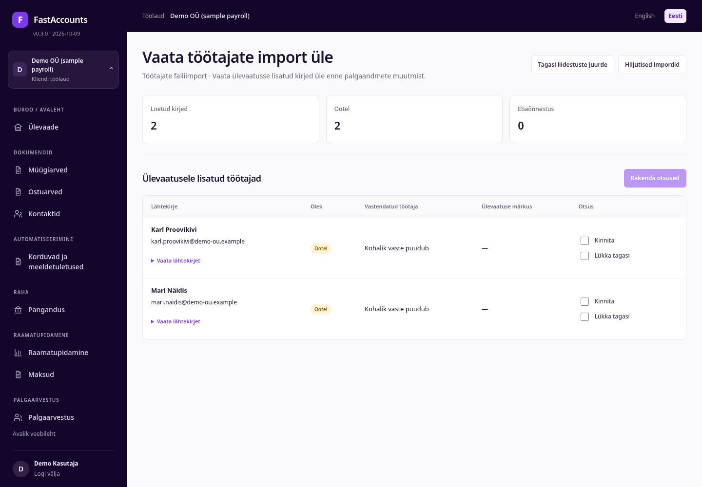
Failiimport kasutab sama ülevaatust nagu FastHR: iga rida lisatakse olekuga Ootel, vastendatakse olemasolevate töötajatega e-posti või isikukoodi järgi ja midagi ei muutu enne, kui valite Kinnita ja Rakenda otsused.
Sama faili uuesti importimine on ohutu: muutmata read märgitakse olekuga Muutmata ja duplikaate ei teki. Hiljutised impordid näitab selle kliendi varasemaid failiimporte.
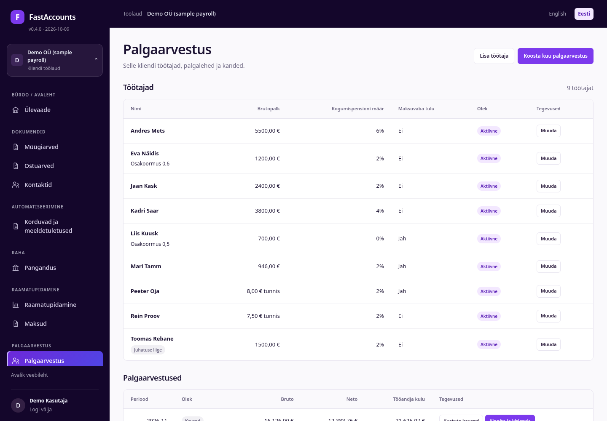
Kinnitatud kirjed on Palgaarvestuses nagu teised töötajad: siin Eva Näidis (osakoormus 0,6, kuupalk 1200,00 € aastatasust 14 400 €) ja Rein Proov (tunnitasu 7,50 €).
Enne järgmist palgaarvestust täiendage, mida FastHR ei hoia: II samba määr, maksuvaba tulu avaldus ja võimalik sotsiaalmaksu miinimumkohustuse erand.
Eesti 2026. aasta palgaarvestuse määrad, mida FastAccounts ei tee ja kust abi leida.
| Kirje | Määr või summa |
|---|---|
| Tulumaks | 22% |
| Maksuvaba tulu (kirjaliku avalduse alusel) | 700 € kuus |
| Sotsiaalmaks (tööandja) | 33%, minimaalne arvestusalus 886 € kuus |
| Töötuskindlustusmakse | töötaja 1,6%, tööandja 0,8% |
| Kogumispension (II sammas) | 0%, 2%, 4% või 6% |
| Alampalk kuni 31.03.2026 | 886 € kuus, 5,31 € tunnis |
| Alampalk alates 01.04.2026 | 946 € kuus, 5,67 € tunnis |
Allikad: EMTA „Maksumäärad“; Vabariigi Valitsuse 23.03.2026 määrus nr 36. Summad arvutatakse täpsete kümnendarvudega ja ümardatakse sentideni (pooled üles).
docs/payroll_rules.md).Muudatuste logi on failis docs/change_log.md; juhendi
uuesti koostamise kirjeldus on failis
docs/USER_GUIDE_BUILD.md.